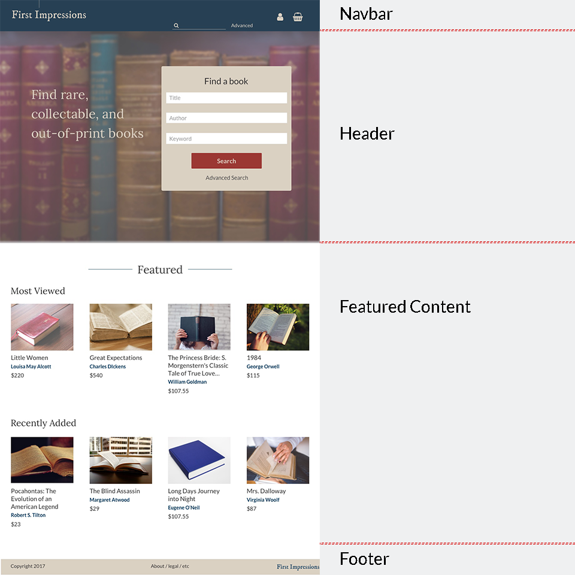

Visual Design
Branding
I knew from very early on that I wanted the name of the bookstore
to be “First Impressions.” An impression refers to a particular
print run of a specific title. In the days of older printing
presses it explicitly referred to how the machine had been manually
arranged to produce the number of books in an order. If a titles’
initial order was for 300 copies, the publisher would print those
copies and then rearrange the press for the next book. If they ran
out of those copies and wanted to print more, they would rearrange
the press and create the second impression. The second run would
still be considered a first edition, but a second impression.
This term is largely antiquated now with modern printing methods,
but would allude to older, historical books, which underscores
their collectability.
“First Impressions” was also the original title of Jane Austen’s
“Pride and Prejudice”, which is less significant to the branding
of the store but still a fun literary touch.
To bring this name to life, I used IM FELL DW Pica. The Fell
Types were developed by Peter De Walpergen and John Fell for
Fell’s Oxford-based “learned press” in the 17th century. Unsurprisingly,
given the age of the Typeface, it’s design evokes history, and some
of the effects of aging.
The final logo.
The edges of the strokes waver visibly,
suggesting the press had been worn down or cut by hand. I’m
particularly partial to the slight nick in the dot of the “i”
that prevents it from being a fully formed oval. The character
appears twice in “First Impressions”, in both words, and creates
a nice near symmetry between them, as well as drawing the viewer’s
eye above the cap height over the other lowercase letters. In the
case of “Impressions”, which is a longer word, this also helps lend
some needed visual variation.
Typefaces
I went back and forth on which typefaces to use for the header
and body text before settling on Lora and Lato, respectively. I
chose Lora because I wanted the headers to be in a serif font,
so as to be reminiscent of books and printing in general. Lato
pairs very well with Lora and also works well on screens even
at smaller sizes. Additionally, the double-story character “a”
and “g” keep the font reminiscent of serif fonts and classic prints.
Early examples I experimented with the Lato/Lora pairing.
Colors
I wanted a color scheme for the site that would evoke a similar
sense of history as IM FELL DW Pica, but would still be visually
appealing and navigable on screens. After looking at different
sites and pictures for inspiration, I ended up relying heavily
the art of Jacques-Louis David. While David as a late 18th and
early 19th century painter certainly brings a sense of history,
I was mainly drawn to his work in this instance because of his use of
reds, blues and browns, which were often similar in shade and
intensity to the bindings of older books.
My final color pallet was informed by
the way David uses blues, reds, and browns.
User Interface
Homepage:
The homepage needed to have a brief description of the site
and what it does, a prominent search display that demonstrated
how users should best use the site, and some initial content
they could browse.

I used red as my CTA color throughout the site, blue for accent
color, and tans and yellows as background on featured or important
information.
Throughout the site I highlight authors’ names in blue. I did
this not only to introduce some variety into a very text-heavy
site, but also because author, rather than title, is the best
indicator to users that they’re looking at the correct book.
Books can have similar or even the same titles, and not all
users are likely to know the publisher or ISBN of their book--the
user persona Madeleine certainly wouldn’t--so author is the best,
fastest way to guide users to the right selection.
Search Results
In my original wireframes I utilized a simple list view for book
results, similar to AbeBooks, Bibliopolis, and eBay. However, it
dawned on me that a grid view result not only allowed the viewer
to see more results at once, but also had a cleaner, more visually
appealing affect that could stand out strikingly against other
rare book sellers.
Accordingly I set to restructure the information granted for
each book in the listview, keeping author, title, and price
immediately apparent, and offering publisher and condition
when viewers hovered. That would still allow users to quickly
scan for important information, made the page much cleaner overall.
Sample assets from the search results page.
Detail View
I also significantly reworked the detail view of the book.
Though my initial wireframe had called for putting the price
next to the image and the pertinent details and description
underneath, the pricing alone next to the picture looked empty.
Instead I pulled all the books publisher information and individual
information up next to the main book picture, keeping the detailed
description alone below. In order to keep the information visually
separated into the categories I’d determined during the card sort,
I utilized extra spacing between the publisher information and books
specific condition, and used borders above and below the pricing to
literally separate it.